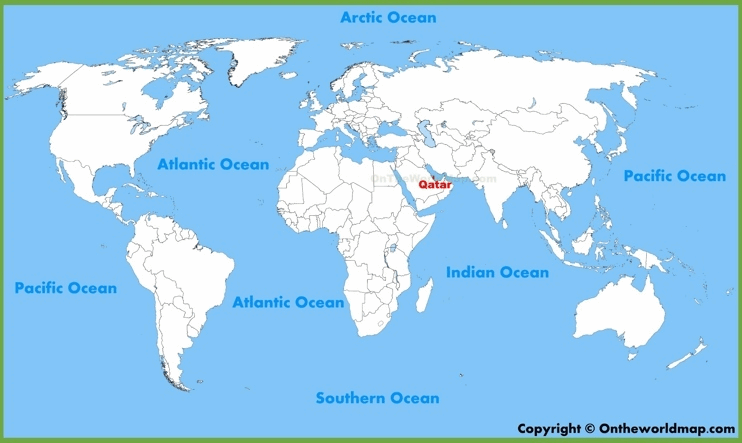

Estádios
Estádio de Al-Bayt
Sendo o estádio sede da primeira partida que dará abertura aos jogos da Copa do Mundo de 2022...
Estádio de Lusail
Esse por sua vez, sendo o maior estádio de Catar, com capacidade para 80.000 pessoas, será sede da partida final que decidirá o campeão dessa edição da Copa...
Estádio 974 (Ras Abu Aboud)
info
Estádio de Al Thumama
info
Estádio de Education City
info
Estádio de Ahmad bin Ali
info
Estádio Internacional de Khalifa
info
Estádio de Al Janoub
info